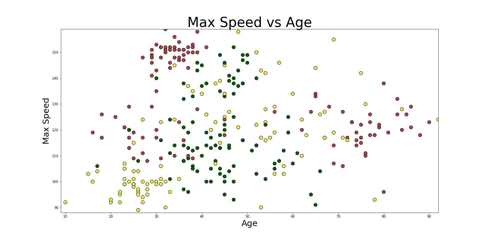

Einführung in Deep Learning
mit TensorFlow und Keras, NNs, CNNs, RNNs, LSTMS/GRUs
ML Summit, Berlin, October 2018
Oliver Zeigermann / @DJCordhose / embarc GmbH
https://djcordhose.github.io/ai/2018_ml_summit_deep_learning_workshop.htmlExample: Customer Data - Risk of Accidents
How would you rank me (47) for a car having 100 mph top speed, driving 10k miles per year?
Keras Layers
Sequential Model
model = keras.Sequential()
Fully Connected Hidden Layer
model.add(Dense(units=50, input_dim=3))
Softmax Output Layer
model.add(Dense(units=3, activation='softmax'))
How does learning work?
This boils down to an optimization problem
The loss to be minimized is calculated from the difference between the softmax output and the known true category
model.compile(loss='sparse_categorical_crossentropy',
optimizer='adam',
metrics=['accuracy'])
What does the neural network learn?
All the weights of a the neurons
model.summary()
_________________________________________________________________
_________________________________________________________________
Layer (type) Output Shape Param #
=================================================================
hidden1 (Dense) (None, 50) 200
_________________________________________________________________
softmax (Dense) (None, 3) 153
=================================================================
Total params: 353
Trainable params: 353
Non-trainable params: 0
_________________________________________________________________Exercise
Can you explain the number of parameters for each layer for the model described in the previous slide?

Use of GPU for non symbolic data

https://twitter.com/chrisalbon/status/907028933693947904?s=03
Why the recent break throughs?

Cray X-MP
Supercomputer (1982)

Titan 5 im Gamer PC (2017)
... but we also have
- Smarter Learning Strategies (more hidden layers = Deep Learning, Convolutional Layers)
- Big Data
GPUs work in parallel

sequential,
slow but flexible

parallel,
fast but same operation for all data
Architectures of Convolutional Neural Networks: VGG

There are a number of specialized neural network layers
MNIST - Using a model already trained
Exploring the different types layers together

Keras layers
Convolution
model.add(Conv2D(filters=32, padding='same', activation='relu'))
Max Pooling
model.add(MaxPooling2D())
Flatten 2d to make it accessible to Dense layers
model.add(Flatten())
More complex architecture: Google Inception V3

Cloud Natural Language: Google's ML API for Speech